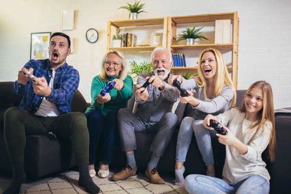
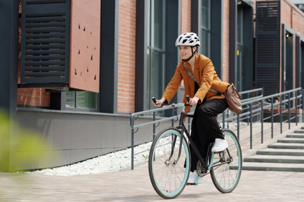
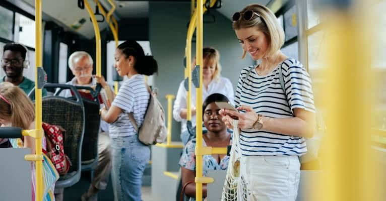
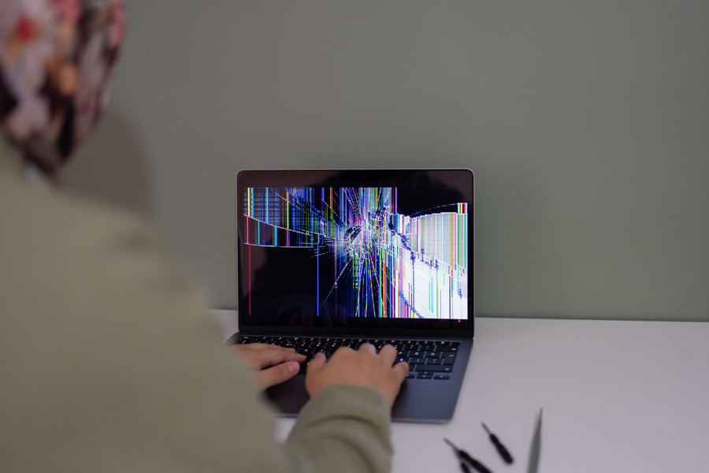

Aptis Speaking
Part 1: In this part, I am going to ask you three short questions about yourself and your interests. You will have 30 seconds to reply to each question.
My favourite person is my best friend. She is small but beautiful. She is friendly and kind. She often helps me when I need. In free time we often go out and play sports together. It’s fun and relaxing. We have known each other since high school and she always understands me well. I feel very lucky to have a friend like her.
I often go to the café with my friends when I have free time. Here we can drink coffee, listen to music and talk about everything. It is fun and relaxing. It helps me reduce stress and share happy moments with my friends. We usually go there after work to relax before heading home. It is one of my favorite ways to unwind.
I was born in small village in the countryside. It is small but quiet and peaceful. The weather is very nice. The people are friendly and kind. The food is delicious and healthy. I love my hometown. I try to visit my hometown at least once a month to see my parents. Every time I go back, I feel calm and happy.
Part 2: In this part, I'm going to ask you to describe a picture. Then I will ask you two questions about it. You will have 45 seconds for each response.
 |
1. Describe the picture => In this picture, I can see five people. I think they are a family. They are sitting on a sofa and playing video games together. They look happy and excited. I think they are enjoying their time together. Behind them, I can see a bookshelf with some books and plants. I like this picture because it reminds me of my family. |
2. When was the last time you played games with everyone?
=> Last weekend, I played games with my friends. We played a video game, called “Free fire”. It was really interesting and we had a lot of fun together. We played for almost two hours and forgot about the time. I hope we can play together again soon.
3. Do you think we should play games with everyone?
=> Yes, I do. It is fun. It helps people reduce stress and share happy moments with other people. Also, we can improve some skills like computer skills. For example, playing games with my brother often makes us laugh a lot. It is a simple way to spend quality time together.
Part 3: In this part, I'm going to ask you to compare two pictures, and I will then ask you two questions about them. You will have 45 seconds for each response.
1. Tell me what you can see in these two pictures.
 |
 |
=> The two pictures show people using different types of transportation.
- in the first picture, I can see a girl. She is about 20 years old. She is riding a bicycle on the street.
- in the second picture, I can see some people in a bus. Some people are standing and some people are sitting. Both pictures show how people get around the city in their daily lives. I think choosing the right transportation depends on the distance and the weather.
2. What is the difference between these two types of transportation?
=> Riding a bicycle is slow and suitable for short distance. Travelling by bus is faster and affordable in big cities. However, it is not convenient if people don’t live near bus stops. For short trips, I usually choose a bicycle because it is easy to park. For longer distances, I prefer the bus because it saves my energy.
3. Which type of transportation do you prefer?
=> both types of transportation have different attractions depending on people’s interests. Some people like riding a bicycle because it is good for the health and the environment. Some people prefer travelling by bus because it is affordable for students and people with low income. Personally, I ride a bicycle to nearby places and take the bus for longer journeys. This way, I can save both time and money.
Part 4: In this part, I'm going to show you a picture and ask you three questions. You will have one minute to think about your answers before you start speaking. You will have two minutes to answer all three questions.

Tell me about a time when you used technology to solve a problem.
What are the advantages of using technology in daily life?
Do you think people rely too much on technology nowadays? Why or why not?
=> Regarding the first question, today I'm going to talk about a time when I used technology to solve a problem. Last month, my computer stopped working. I watched a video on the Internet and fixed the problem by myself.
Turning to the second question, technology makes our daily life easier. It helps people study, work and communicate more quickly.
About the last question, I think some people rely too much on technology because they use it all the time. However, technology is still very useful if people use it wisely. For example, I also use my phone to learn English through apps every day. I think technology makes learning much easier and more convenient. However, I still try to spend some time away from screens to relax.